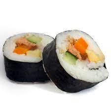

sushi

this is the best sushi in the world made with the freshest ingredients in the world bought every day at the local shop so the costumer gets the best sushi
ingredients
- rice
- salmon
- shrimp
- nori
- masago
- cream cheese
- avocado
- chicken
- soy sauce
steps
- clean the rice
- cook the rice
- put vinager in the rice
- cut very thin slices of salmon
- cook the chicken
- cut the avocado feather style
- when all is ready assemble the roll